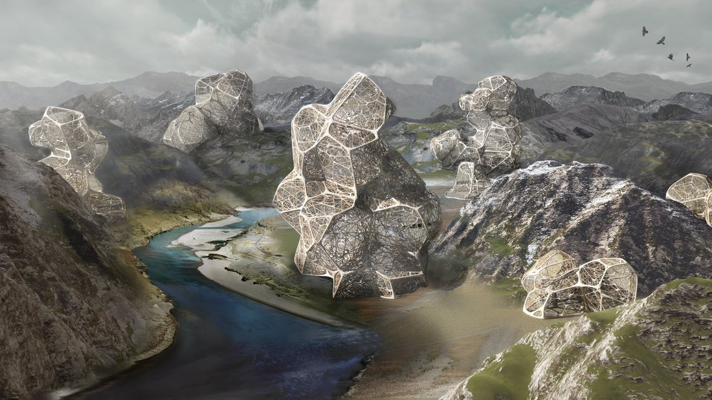
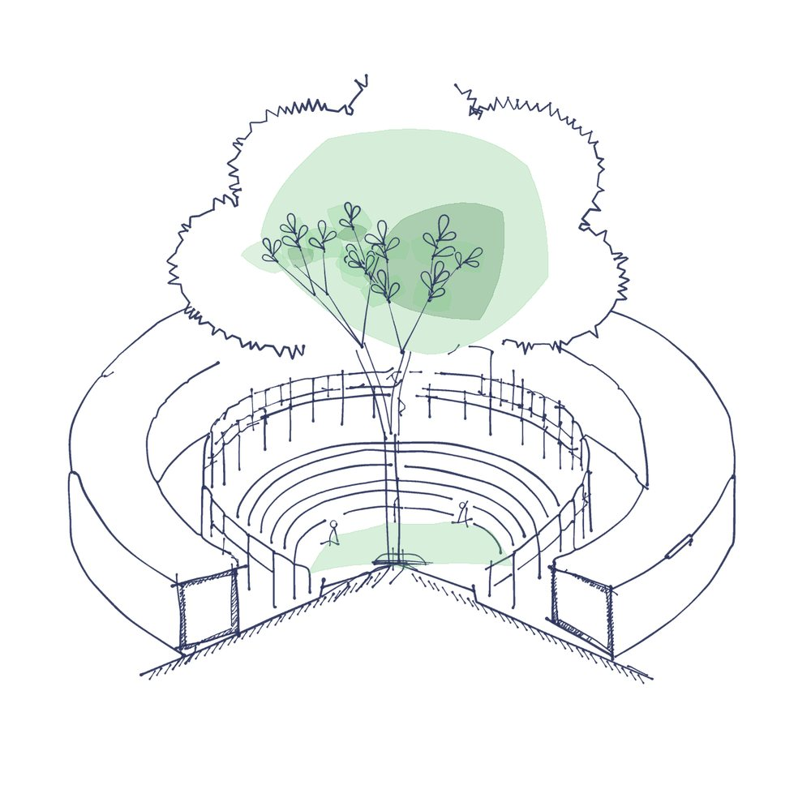
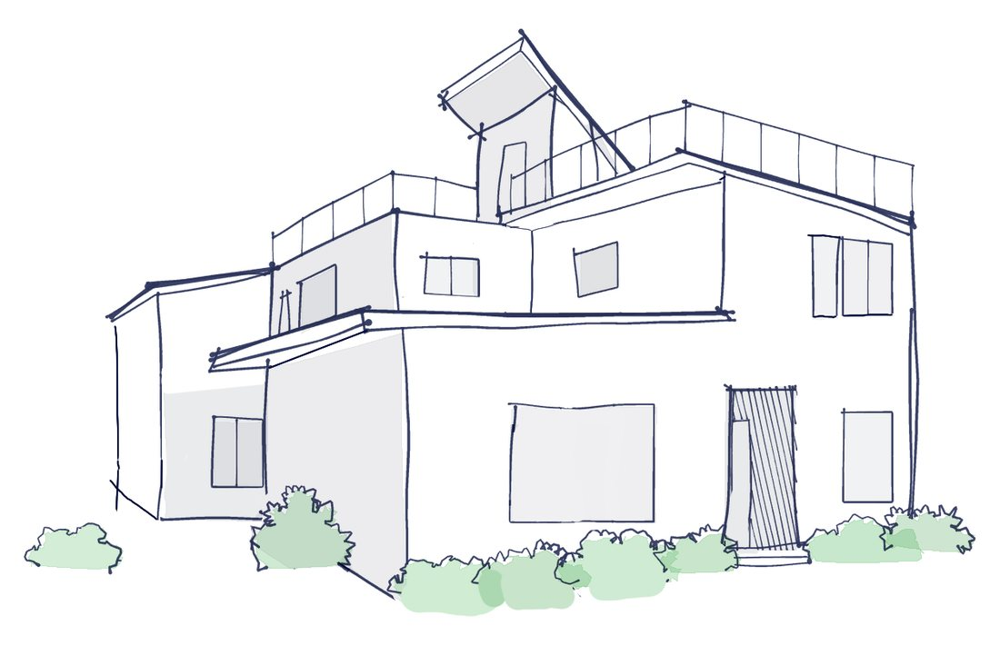
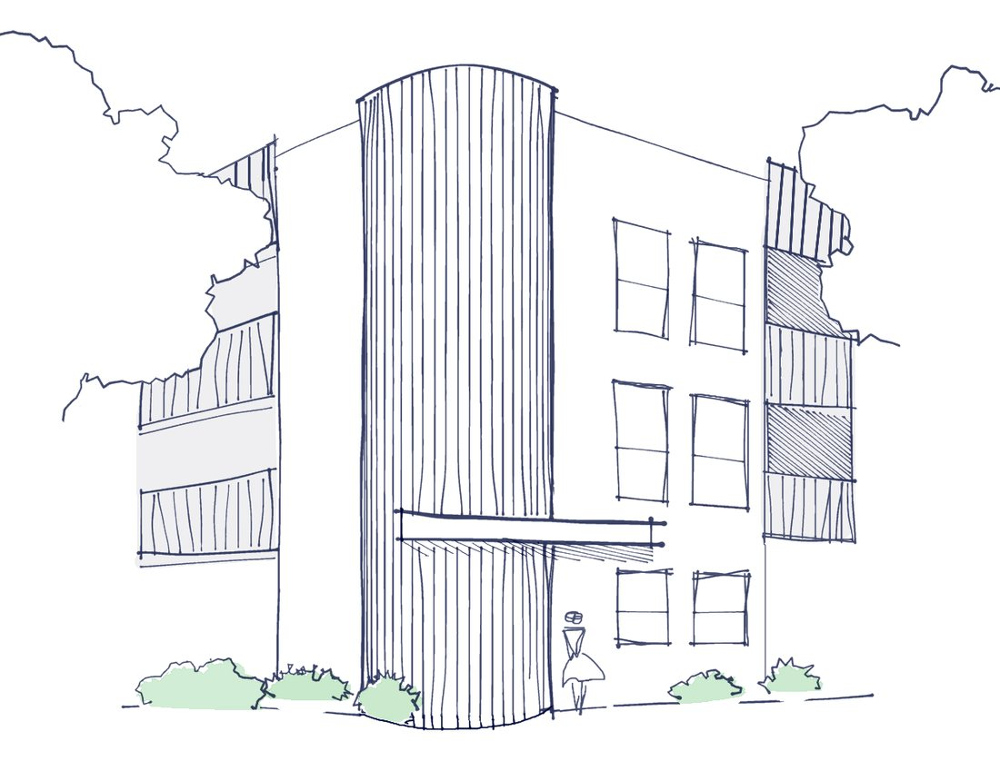

洛杉矶的建筑设计师。我的工作大多落在类别与类别之间——街区遇到市集，建筑遇到地形，一种用途让位给另一种用途的地方。



建筑设计师，研究生毕业后在洛杉矶执业三年，主持住宅与小型商业项目，从方案设计一直做到拿到许可。
szhang52@alumni.usc.eduLinkedIn全部项目
 Sylvie Zhang
Sylvie Zhang
Sylvie Zhang
Sylvie Zhang